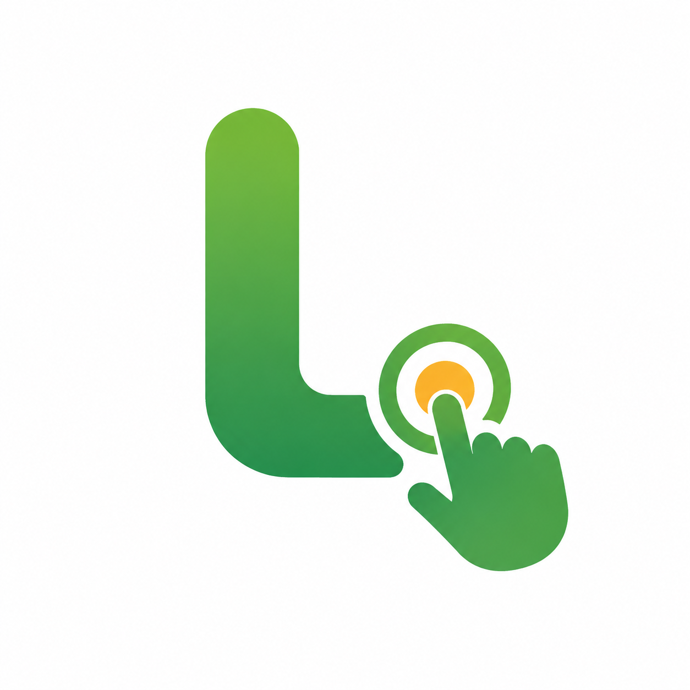

真实模拟操作流程，沉浸式体验小路如何一步步引导您完成任务
App 真机训练是主线；这里用于产品演示、录屏回放和镜像窗口补充验证
点击播放演示视频
查看完整的退货引导演示
小路通过 OCR + LLM 智能理解，实时识别手机画面并语音引导老年人操作，陪你走好数字世界的每一步。
PaddleOCR：服务器 CPU 离线识别中文页面，不需要填写第三方 API Key
Golden Flow：预存任务节点、关键指标词、风险和纠偏引导；OCR 定位到节点后才播报
核心原则：实时模式不按时间轴播预设脚本，只根据当前画面定位和引导；训练模式只采集交互事件
引导升级：8秒无操作自动加位置描述，16秒无操作建议返回首页
迷路检测：A→B→A→B来回跳转触发"迷路了"提示